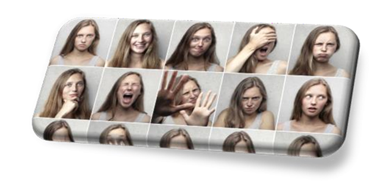

La personalidad es lo que nos diferencia de los demás, pero también es
lo que nos hace únicos, La personalidad se ha definido metafóricamente
con el equivalente psicológico del sistema inmunitario del cuerpo, la
personalidad es nuestra defensa psicológica ante las adversidades. Nos
ayuda a afrontar situaciones inesperadas de forma flexible y adaptativa,
El desarrollo de una actividad sana o patológica va a depender de la
estructura de personalidad de una persona y de sus características o
rasgos. Cada estilo de personalidad es una forma distinta de afrontar la
vida, lo cual convierte a la personalidad en un factor clave para
entender la salud mental de una persona.
Significado: El origen se encuentra en el vocablo latino persona, pasó a
utilizarse para definir las características físicas reales de una
persona, y en día es la de un patrón complejo de características
psicológicas que se expresan de forma automática en casi todos los
contextos a los que se enfrenta una persona.
· El carácter se modela con las normas sociales y se va adquiriendo como
parte de nuestra educación y maduración. Por tanto, el carácter depende
de las interacciones que tenga la persona con su entorno El temperamento
está influido por unos rasgos determinados genéticamente y por un perfil
neuro-bioquímico determinado. El ambiente no puede modelar el
temperamento, como sí modela el carácter.
El carácter influye la educación y sobre el temperamento la genética.
Podemos decir que una persona tiene un “temperamento irritable” porque
biológicamente está configurado así; mientras que, de otra persona
diremos que tiene “buen carácter” porque mediante la educación se ha
adaptado bien a las normas sociales.
La definición de trastorno de personalidad más extendida es la de un
patrón desadaptativo de comportamiento y experiencia interna que se
aleja mucho de las expectativas de la cultura original de la persona.
Este patrón es estable en el tiempo y de larga duración, con un inicio
en la adolescencia. Suelen presentar una escasa flexibilidad y capacidad
para adaptarse a las circunstancias cambiantes de la vida. Habitualmente
afecta a toda la experiencia de la persona, provocando un malestar
significativo para la persona que lo sufre y un deterioro de la
actividad social, laboral o familiar.
Es necesario conocer las particularidades de la cultura de origen del
paciente y, quizás, consultar qué consideración tendrían determinados
comportamientos en su marco cultural. Conocer estas diferencias puede
evitar un diagnóstico equivocado de trastorno de personalidad.
Pensamiento: la forma de percibir e interpretar lo que les sucede a sí
mismos o a otras personas suele diferir de lo que opina su entorno.
Afectividad: las respuestas emocionales de las personas con un trastorno
de personalidad suelen resultar inadecuadas con respecto a lo
socialmente aceptado para la situación.
Funcionamiento interpersonal: por distintos motivos y de distintas
maneras las relaciones interpersonales suelen verse muy afectadas. Por
tanto, las relaciones familiares suelen deteriorarse, las relaciones de
pareja no suelen mantenerse en el tiempo y las relaciones laborales
Rasgos de personalidad:
Son patrones duraderos y persistentes de la forma de percibir, pensar y
relacionarse con uno mismo y con su entorno, que se expresan en un
amplio rango de situaciones personales y sociales.
Los rasgos de personalidad son inherente, cuando los rasgos o patrones
de personalidad son inflexibles y desadaptativos, causando un malestar
significativo a la persona que los sufre e interfiriendo en su
rendimiento y sus relaciones personales.
Personalidad de una persona incluye todas sus características:
cognitivas, intrapsíquicas, biológicas y de relación con los demás.
Tipos de Trastornos de personalidad: Se suelen clasificar
categorialmente en 3 clúster de personalidad y cada uno de estos grupos
se dividen en distintos tipos de personalidad.
Los 3 grupos de trastornos de personalidad son:
1. Clúster o grupo de personalidad A: se corresponde con aquellas
personas que pueden ser consideradas raras o excéntricas. Incluye los
trastornos de personalidad paranoide, esquizoide y esquizotípico.
2. Clúster o grupo de personalidad B: las personas englobadas en este
grupo se caracterizan por ser exageradamente emocionales, dramáticas o
erráticas. Engloba los trastornos de personalidad antisocial, límite,
histriónico y narcisista.
3. Clúster o grupo de personalidad C: identifica a aquellas personas que
son muy ansiosas o sienten temor con facilidad. Lo completan los
trastornos de personalidad evasiva, dependiente y
obsesivo-compulsiva.

Estos 3 clúster de personalidad organizan 10 tipos distintos de
trastornos de personalidad:
1. Trastorno paranoide de la personalidad: patrón de suspicacia y
desconfianza, en el que se interpreta malintencionadamente la voluntad
de los demás.
2. Trastorno esquizoide de la personalidad: patrón en el que existe un
distanciamiento social y una limitación de la expresión emocional.
3. Trastorno esquizotípico de la personalidad: patrón en el que
predominan los pensamientos y comportamientos excéntricos, con
dificultades en las relaciones íntimas.
4. Trastorno antisocial de la personalidad: patrón de desprecio hacia
los demás y violación continua de sus derechos.
5. Trastorno límite de la personalidad o borderline: patrón de
inestabilidad afectiva, de las relaciones con los demás y de la imagen
de uno mismo.
6. Trastorno histriónico de la personalidad: patrón de búsqueda excesiva
de la atención con elevada emocionalidad.
7. Trastorno narcisista de la personalidad: patrón de necesidad de
admiración, grandiosidad y ausencia de empatía hacia los demás.
8. Trastorno evitativo de la personalidad: patrón en el que la persona
se siente inadecuada, se retrae socialmente y es muy sensible a la
evaluación negativa de los demás.
9. Trastorno dependiente de la personalidad: patrón de comportamiento
sumiso, con una necesidad excesiva de estar cerca y de sentirse cuidado
por la persona de la que se depende.
10. Trastorno de personalidad obsesivo-compulsivo: patrón de
personalidad que gira en torno a la preocupación por el orden, el
control y el perfeccionismo.
Es frecuente encontrar en una misma persona combinaciones de dos, tres y
hasta cuatro tipos de trastornos de personalidad. En algunas ocasiones
hay un tipo de personalidad que predomina sobre el resto, pero otras
veces no hay un patrón típico de personalidad. Cuando esto último
sucede, podemos utilizar el diagnóstico de trastorno de personalidad no
especificado.
En algunas ocasiones, podemos encontrar el diagnóstico de trastorno de
personalidad mixto o trastorno con características mixtas de la
personalidad. En estos casos, normalmente se mencionan dos o tres tipos
de trastorno de personalidad y lo que significa es que reúnen criterios
mixtos de distintos trastornos de personalidad.
Síntomas de los trastornos de personalidad: Los síntomas de los
trastornos de personalidad son muy variables en función del tipo de
trastorno de personalidad. Los síntomas pueden abarcar un amplio
espectro de posibilidades, desde la desconfianza extrema Cómo saber
cuándo una persona tiene un Trastorno de personalidad:
1. Escasa capacidad de adaptación, especialmente en condiciones de
estrés o ante dificultades que provoca una fragilidad en la estabilidad
emocional.
2. Inflexibilidad para adaptarse. Son personas que imponen rígidamente
las mismas estrategias una y otra vez. A pesar de empeorar las cosas,
apenas varían mínimamente sus estrategias de afrontamiento y terminan
incrementando su nivel de estrés y amplificando su vulnerabilidad. Esta
rigidez requiere que el entorno se flexibilice al máximo, hasta que el
entorno no pueda adaptarse a la persona y surja una situación
crítica.
3. La repetición de los repertorios patológicos de conducta que se
repiten como un círculo vicioso y su incapacidad para cambiar provoca
que sus personalidades sean cada vez más patológicas y problemáticas.
Arruinan cada oportunidad de mejorar, ocasionándole nuevos problemas y
recreando situaciones pasadas de fracasos
Quiere de una entrevista clínica y evaluación psicopatológica, haciendo
especial hincapié en la evaluación de los patrones de funcionamiento de
la persona a lo largo del tiempo. Hay que asegurarse que las
características particulares de la personalidad no son debidas al efecto
de una sustancia, a un estado mental transitorio, ni a otra afección
médica.
A qué edad se diagnostica un trastorno de personalidad:
Pueden identificarse desde el comienzo de la edad adulta o durante la
adolescencia, que es cuando estos patrones de personalidad empiezan a
ser reconocibles. Si bien los patrones desadaptativos suelen ser
estables en el tiempo, algunos tipos de trastorno de personalidad pueden
mejorar con el paso del tiempo y con la edad, como son los trastornos
del clúster B, otros trastornos de personalidad son muy estables a lo
largo de los años.
Tratamiento de los trastornos de personalidad:
ocurre, cómo afecta a su entorno y cómo ha influido en sus fracasos y
frustraciones. El tratamiento de los trastornos de personalidad puede
ser muy efectivo con la psicoterapia, pero es un tratamiento lento. Son
necesarios meses o años de terapia para lograr mejorar estos pat .A
través de la terapia psicológica, la persona puede ser capaz de entender
lo que le rones, especialmente cuando se instauraron hace años. El
ahorro de sufrimiento y futuras repeticiones de frustraciones pasadas es
enorme y hace que merezca la pena el esfuerzo.
Consideramos muy importante es la experiencia y formación del terapeuta,
más que la corriente a la que esté adscrito. Al final, la mayoría de las
corrientes tienen en común una serie de habilidades y estrategias que el
terapeuta ha de conocer y saber aplicar. Por tanto, creemos que lo más
importante es ponerse en manos de un buen psiquiatra o psicólogo
clínico, que tenga experiencia en el tratamiento de los trastornos de
personalidad y, sobre todo, que pueda hacer una correcta evaluación. La
clave de la evaluación no es solo el definir el arquetipo de
personalidad, sino también evaluar la presencia de otros problemas de
salud mental, que deban ser tratados.
Contamos con un equipo de profesionales con años de experiencia en el
tratamiento de los trastornos de personalidad y con formación en
distintas corrientes de psicoterapia, ofreciendo un abordaje integrador
que mejor se adapte al paciente en particular.}
Existen distintos niveles de gravedad de un trastorno de personalidad y,
dentro de los distintos tipos, también hay uno más graves que otros.
Potencialmente, el trastorno límite o borderline de la personalidad es
el más grave, aunque el trastorno antisocial también puede provocar
mucho daño a su alrededor. En algunas ocasiones, la gravedad se puede
intensificar o disminuir a lo largo del tiempo en función de los
acontecimientos externos y la presencia o ausencia de personas que
puedan ayudarlos a compensar su inflexibilidad.